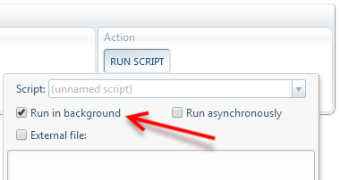
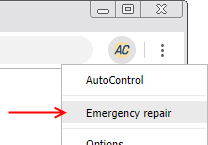
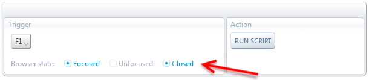

Background scripts
AutoControl lets you run scripts either in a webpage or in the background.

When a script runs in a webpage, the script's lifetime is tied to the lifetime of the page.
Which means, once the page is unloaded, all scripts running in that page are immediately terminated.
A page will be unloaded when:
- You close its containing tab
- You load a new page in that tab
- You reload the page
- You apply the unload tabs action to its containing tab
- You are low on RAM and the browser decides to unload some pages to release memory
The lifetime of a background script, on the other hand, is only tied to the lifetime of the extension itself.
Extensions are started up when you open the first browser window and are shut down right after you close the last remaining tab.

Clicking on "Emergency repair" also terminates any background script currently running.
Additionally, triggers have the option to work even when the browser is closed.

This will activate the browser's background mode, which allows AutoControl to run persistently, even when no browser windows are open.
Thanks to this, a background script can run freely, without worrying that it might be inadvertently terminated
when pages are unloaded and tabs closed due to the script's own actions or the user's.
Let's see a concrete example. Suppose we want to click the submit button in a login form.
Then, once the submission is complete, we'll do something interesting in the newly loaded page.
So, we could run the following script in that page:
document.querySelector('#submit-button').click() ;
await ACtl.on('tabLoadEnd', '#currentTab') ;
alert("We are in. Let's do some sneaky stuff.") ;
This script would've worked except for the fact that clicking the submit button causes the tab to navigate to another page,
which results in the script being terminated prematurely because the page the script was running in was unloaded.
In other words, this script causes its own demise.
In order to avoid this situation, the script has to run in the background and be modified as follows:
ACtl.runInTab('#currentTab', ()=>{
document.querySelector('#submit-button').click() ;
}) ;
await ACtl.on('tabLoadEnd', '#currentTab') ;
ACtl.runInTab('#currentTab', ()=>{
alert("We are in. Let's do some sneaky stuff.") ;
}) ;
The ACtl.runInTab function lets us run code in another tab. That way, even though the script is running in the background,
we can still interact with the page we want.
You can think of background scripts as running in a "hidden page" of sorts, which cannot ever be closed unless the extension itself is shut down.
This gives background scripts access to all Web APIs that page scripts have.
Anything that can be done in a page script can also be done in a background script.
 Forum
Install now from theChrome Web Store
Forum
Install now from theChrome Web Store